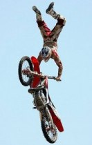

Extreme sport
|
 Почему экстремальный спорт так важен для молодежи? Звучит банально - чтобы выплескивать свою энергию. Иногда и негатив, все зависит от вида спорта. После длительных тренировок так устаешь, что не остается времени и сил ни на ругань, ни на простые выяснения отношений, а хочется внимания, любви.
Почему экстремальный спорт так важен для молодежи? Звучит банально - чтобы выплескивать свою энергию. Иногда и негатив, все зависит от вида спорта. После длительных тренировок так устаешь, что не остается времени и сил ни на ругань, ни на простые выяснения отношений, а хочется внимания, любви.Но ни бег, ни шахматы мы не относим к экстремальному спорту, потому что риск, который там присутствует: а) ничтожно мал б) скорее всего не зависит от особенностей самого спорта в) не контролируем человеком, как и все непредвиденные обстоятельства.
В экстремальном же спорте человек осознанно подвергает себя смертельной опасности. Хотя это совершенно не значит, что все занимающиеся экстремальными видами спорта - смертники и камикадзе. Как бы то ни было, а человек все таки существо разумное, и даже рискуя осознанно, он с помощью современного оборудования, снаряжения, страховки старается максимально обезопасить себя.
Во-вторых, экстремальный спорт - это перешагивание за физический и эмоциональный предел возможностей человека. Инстинкт самосохранения, старательно оберегая человека, выстраивает для него этот предел, а экстремальщики с упорством его преодолевают. Человек не должен летать потому, что крыльев у него нет, так некоторые упрямцы убеждают себя, что рождены именно для этого. А все эти трюки с сальто противоречат всемирному тяготению, так экстремальщики и через законы физики перешагивают.
{kind=link}
В-третьих, экстремальный спорт предельно обостряет все шесть чувств человека (зрение, обоняние, осязание, слух, вкус, интуицию). Именно от концентрации всех чувств зачастую зависит исход тренировок и соревнований.
В-четвертых, экстремальные виды спорта в большинстве своем крайне дороги, сравниться с ними может разве, что только Формула-1. Это связано с условием первым, т.е. с необходимостью обеспечить безопасность, а на жизни никто не хочет экономить. Да и производители и продавцы снаряжения не хотят брать на себя ответственность, поэтому предпочитают делать скорее качественно, чем дешево.
В-пятых, занятие экстремальным спортом приносит ни с
 чем, или мало с чем, сравнимый восторг и чувство удовлетворения. Если не верите, почитайте рассказы экстремальщиков, или посмотрите в их глаза. Что еще может зажигать в них такую искру, как ни ощущение эктремальности?
чем, или мало с чем, сравнимый восторг и чувство удовлетворения. Если не верите, почитайте рассказы экстремальщиков, или посмотрите в их глаза. Что еще может зажигать в них такую искру, как ни ощущение эктремальности?Молодые люди стремятся испытать новые ощущения, для них это новые переживания, которых так порою не хватает в нашей повседневной жизни. Экстремальный спорт – вид спорта, связанный с преодолением какого-то ограничения скорости, высоты, опасности. И главное, что мы получаем – ощущение экстрима и наблюдение прекрасных видов, которые, возможно, другие люди даже не видели. Чем старше человек, тем он старается меньше рисковать, поэтому чаще можно услышать сочетание «молодежь и спорт» - экстремальный спорт...
К сожалению, в нашей стране уделяется не много внимания спорту. В основном, мы сами финансируем свои увлечения. Если есть деньги и время, занимаешься, чем хочешь – и велоспортом, и паркуром. А вот если нет финансовых возможностей, то выбор становится намного меньше, но все равно можно найти нужный тебе спорт. Но найдя, возникают новые трудности, в каждом коллективе есть конкуренция, поэтому чтобы пробиться на самый верх придется потрудиться не один год.